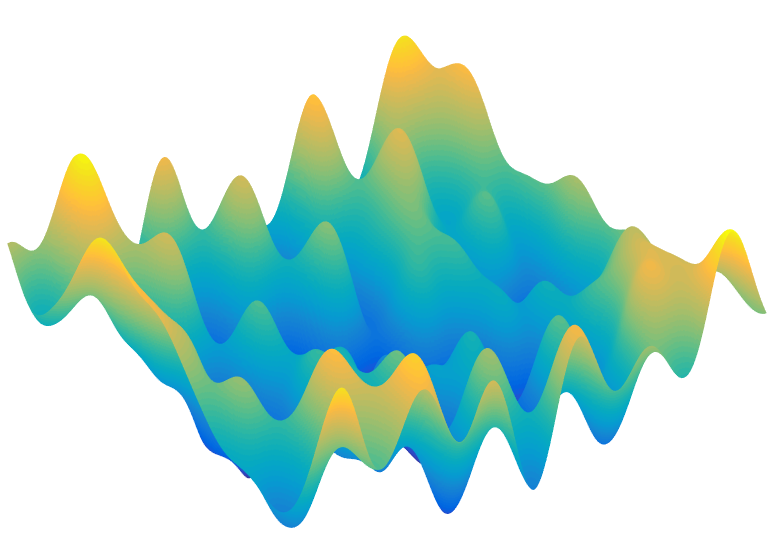

Yuejie Chi
Nonconvex Statistical Learning and Estimation

To process high-dimensional data created by modern sensing modalities, it is necessary to exploit low-dimensional geometric structures of the information embedded in the data, including sparsity, low-rank structure, positivity, stationarity, and other structural constraints, in order to reduce the degrees of freedom to combat the curse of dimensionality. Notably, many of the most useful low-dimensional structures are naturally described using nonconvex constraints.
In recent years, statistical procedures have been developed to promote low-dimensional structures using convex relaxations, rather than directly attacking the nonconvex problems, exploiting the rich theory in convex analysis and convex optimization. However, by imposing convexity we pay our dues in computational guarantees. For example, in low-rank matrix estimation problems, convex relaxations typically require the run time to scale at least cubically in the matrix dimension. In contrast, a direct nonconvex approach only takes time (and also storage) proportional to reading the data, which is highly desirable when solving practical large-scale problems. The secret source that allows us to handle non-convexity is rooted in the fact that we are not interested in "generic" nonconvex problems, but rather, nonconvex problems arising in concrete signal and information processing scenarios. These scenarios typically provide us with much richer structural information. For example, it is discovered that, for several canonical information processing problems such as low-rank matrix completion, phase retrieval, and blind deconvolution, the natural non-convex formulations enjoy benign geometric structures, such that simple iterative algorithms, such as gradient descent and alternating minimization, can simultaneously achieve near-optimal statistical accuracy and low computational complexity.
Overview
Spectral Methods for Data Science: A Statistical Perspective [Arxiv]
Y. Chen, Y. Chi, J. Fan, and C. Ma, Foundation and Trends in Machine Learning, vol. 14, no. 5, pp. 566-806, 2021.-
Nonconvex Optimization Meets Low-Rank Matrix Factorization: An Overview [Arxiv] [Slides]
Y. Chi, Y. M. Lu, and Y. Chen, IEEE Trans. on Signal Processing, vol. 67, no. 20, pp. 5239-5269, 2019. -
Provably Accelerating Ill-Conditioned Low-Rank Estimation via Scaled Gradient Descent, Even with Overparameterization [Arxiv]
C. Ma, X. Xu, T. Tong and Y. Chi, Explorations in the Mathematics of Data Science, Springer, pp. 133-165, 2024. -
Harnessing Structures in Big Data via Guaranteed Low-Rank Matrix Estimation [Arxiv]
Y. Chen and Y. Chi, IEEE Signal Processing Magazine, vol. 35, no. 4, pp. 14-31, 2018.
Nonconvex Low-Rank Matrix Estimation
The Power of Preconditioning in Overparameterized Low-Rank Matrix Sensing [Arxiv]
X. Xu, Y. Shen, Y. Chi, and C. Ma, International Conference on Machine Learning (ICML), 2023.Accelerating Ill-Conditioned Low-Rank Matrix Estimation via Scaled Gradient Descent [Arxiv] [Code]
T. Tong, C. Ma, and Y. Chi, Journal of Machine Learning Research, vol. 22, no. 150, pp. 1-63, 2021.-
Implicit Regularization in Nonconvex Statistical Estimation: Gradient Descent Converges Linearly for Phase Retrieval, Matrix Completion and Blind Deconvolution [Arxiv]
C. Ma, K. Wang, Y. Chi, and Y. Chen, Foundations of Computational Mathematics, vol. 20, pp. 451-632, 2020. Short version at ICML 2018.
2024 SIAM Activity Group on Imaging Science Best Paper Prize Low-Rank Matrix Recovery with Scaled Subgradient Methods: Fast and Robust Convergence Without the Condition Number [Arxiv]
T. Tong, C. Ma, and Y. Chi, IEEE Trans. on Signal Processing, vol. 69, pp. 2396-2409, 2021. Short version received Audience Choice Award at DSLW 2021.-
Nonconvex Matrix Factorization from Rank-One Measurements [Arxiv]
Y. Li, C. Ma, Y. Chen, and Y. Chi, IEEE Trans. on Information Theory, vol. 67, no. 3, pp. 1928-1950, 2021. Short version at AISTATS 2019. -
Beyond Procrustes: Balancing-free Gradient Descent for Asymmetric Low-Rank Matrix Sensing [Arxiv]
C. Ma, Y. Li, and Y. Chi, IEEE Trans. on Signal Processing, vol. 69, pp. 867-877, 2021. Short version at Asilomar 2019. -
Noisy Matrix Completion: Understanding Statistical Guarantees for Convex Relaxation via Nonconvex Optimization [Arxiv]
Y. Chen, Y. Chi, J. Fan, C. Ma and Y. Yan, SIAM Journal on Optimization, vol. 30, no. 4, pp. 3098-3121, 2020. (Authors are listed alphabetically.) -
Nonconvex Low-Rank Matrix Recovery with Arbitrary Outliers via Median-Truncated Gradient Descent [Arxiv]
Y. Li, Y. Chi, H. Zhang, and Y. Liang, Information and Inference: A Journal of the IMA, vol. 9, no. 2, pp. 289-325, 2020. Short version at SampTA 2017.
Nonconvex Low-Rank Tensor Estimation
Scaling and Scalability: Provable Nonconvex Low-Rank Tensor Estimation from Incomplete Measurements [Arxiv] [Code]
T. Tong, C. Ma, A. Prater-Bennette, E. Tripp, and Y. Chi, Journal of Machine Learning Research, vol. 23, no. 163, pp. 1-77, 2022. Short version at AISTATS 2022.-
Subspace Estimation from Unbalanced and Incomplete Data Matrices: $\ell_{2,\infty}$ Statistical Guarantees [Arxiv]
C. Cai, G. Li, Y. Chi, H. V. Poor, and Y. Chen, The Annals of Statistics, vol. 49, no. 2, pp. 944-967, 2021. Fast and Provable Tensor Robust Principal Component Analysis via Scaled Gradient Descent [Arxiv] [Code]
H. Dong, T. Tong, C. Ma, and Y. Chi, Information and Inference: A Journal of the IMA, vol. 12, no. 3, pp. 1716-1758, 2023.Deep Unfolded Tensor Robust PCA with Self-supervised Learning [Arxiv] [Code]
H. Dong, M. Shah, S. Donegan, and Y. Chi, International Conference on Acoustics, Speech, and Signal Processing (ICASSP), 2023.Accelerating Ill-Conditioned Robust Low-Rank Tensor Regression [PDF]
T. Tong, C. Ma, and Y. Chi, International Conference on Acoustics, Speech, and Signal Processing (ICASSP), 2022.
Phase Retrieval and Blind Deconvolution via Nonconvex Optimization
-
Manifold Gradient Descent Solves Multi-channel Sparse Blind Deconvolution Provably and Efficiently [Arxiv]
L. Shi and Y. Chi, IEEE Trans. on Information Theory, vol. 67, no. 7, pp. 1-28, 2021. Short version at ICASSP 2020. -
Gradient Descent with Random Initialization: Fast Global Convergence for Nonconvex Phase Retrieval [Main] [Supplementary] [Arxiv]
Y. Chen, Y. Chi, J. Fan and C. Ma, Mathematical Programming, vol. 176, no. 1, pp. 5-37, 2019. (Authors are listed alphabetically.) -
Median-Truncated Nonconvex Approach for Phase Retrieval with Outliers [Arxiv]
H. Zhang, Y. Chi and Y. Liang, IEEE Trans. on Information Theory, vol. 64, no. 11, pp. 7287-7310, 2018. Short version at ICML 2016. -
A Nonconvex Approach for Phase Retrieval: Reshaped Wirtinger Flow and Incremental Algorithms [Code]
H. Zhang, Y. Zhou, Y. Liang and Y. Chi, Journal of Machine Learning Research, vol. 18, no. 141, pp. 1-35, 2017. -
Kaczmarz Method for Solving Quadratic Equations
Y. Chi and Y. M. Lu, IEEE Signal Processing Letters, vol. 23, no. 9, pp. 1183 - 1187, 2016.
Nonconvex Super Resolution
Local Geometry of Nonconvex Spike Deconvolution from Low-Pass Measurements [Arxiv]
M. Ferreira Da Costa and Y. Chi, IEEE Journal on Selected Areas in Information Theory, vol. 4, pp. 1-15, 2023.
Shallow Neural Networks
-
Guaranteed Recovery of One-Hidden-Layer Neural Networks via Cross Entropy [Arxiv]
H. Fu, Y. Chi, and Y. Liang, IEEE Trans. on Signal Processing, vol. 68, pp. 3225-3235, 2020. Short version at ISIT 2019.